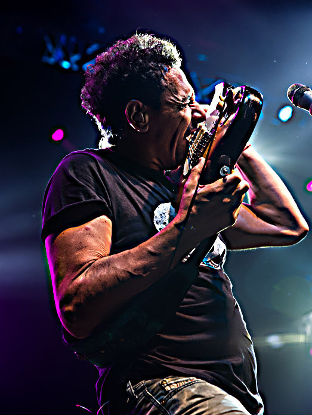
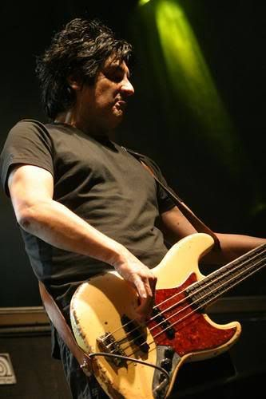
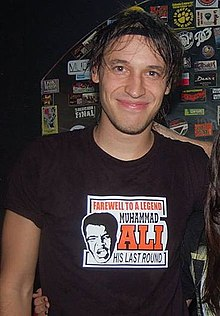

Integrantes
Ricardo Mollo
Cantante-Guitarrista
Ricardo Mollo, nacido en 1955 en Buenos Aires, Argentina, es un destacado músico, compositor y productor. Es reconocido por su versatilidad y talento en diversos géneros musicales, especialmente en el rock. Como líder de la influyente banda "Sumo" en los años 80, contribuyó significativamente al desarrollo del rock argentino. Posteriormente, formó "Divididos", otra banda emblemática que fusiona rock, folclore y otros estilos. Mollo ha dejado una huella indeleble en la escena musical latinoamericana, destacándose por su habilidad como guitarrista y su voz única. Su legado incluye numerosos éxitos y una influencia perdurable en la música contemporánea.
Diego Arnedo
Bajista
Diego Arnedo, nacido en 1958 en Buenos Aires, Argentina, es un destacado músico y bajista reconocido por su contribución al rock argentino. Su carrera se ha centrado principalmente en dos bandas emblemáticas: "Sumo" en los años 80, donde colaboró con el carismático Luca Prodan, y "Divididos", fundada junto a Ricardo Mollo. Arnedo es admirado por su habilidad técnica y creatividad en el bajo, aportando a la fusión de estilos que define el sonido distintivo de estas bandas. Su legado perdura a través de incontables éxitos y su impacto duradero en la escena musical de América Latina.
Catriel Civarella
Baterista
Catriel Ciavarella, nacido el 1 de septiembre de 1979, es un destacado baterista argentino de rock, conocido por su actual participación en la influyente banda Divididos. Su carrera musical despegó a los 14 años cuando Ricardo Mollo intentó incorporarlo a Divididos, aunque fue en 2004 cuando finalmente se unió de manera definitiva. Antes, integró MAM y participó en proyectos como Nuca y la banda de Alejandro Sokol. Ciavarella ha dejado su huella en la escena musical argentina, destacándose en la grabación de álbumes como "Amapola del 66" y "Haciendo Cosas Raras". Actualmente, continúa siendo pieza fundamental en la gira 2021-2023 de Divididos, participando en eventos conmemorativos y explorando nuevos proyectos como productor artístico
Proximas Fechas
Divididos despide el año con todo en el Teatro Flores. 09/12 - Sabado; 10/12 - Domingo; 16/12 Sabado; 17/12 Domingo